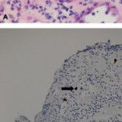
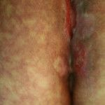
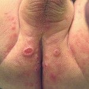
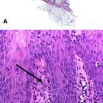
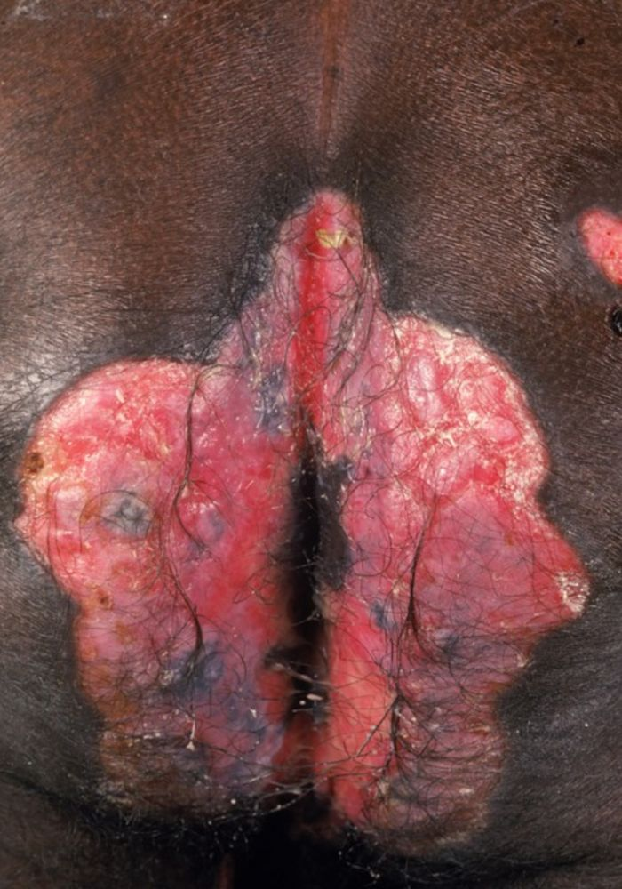
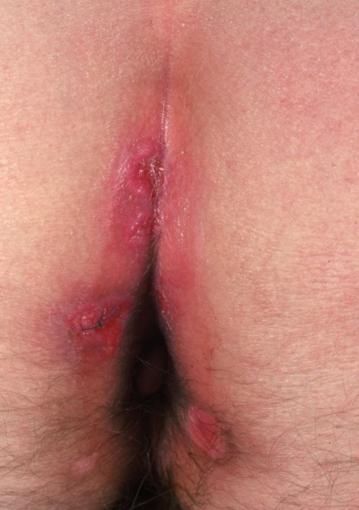
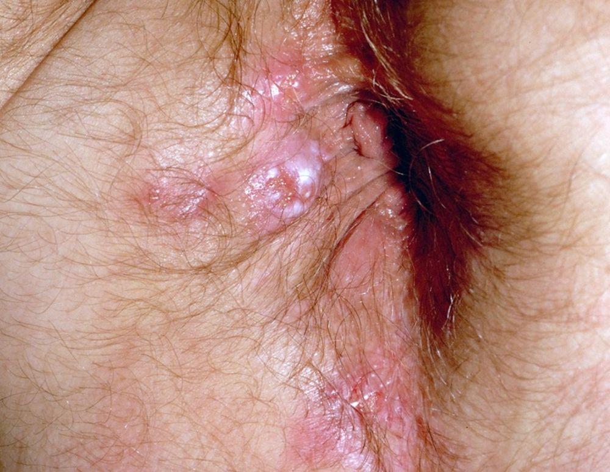
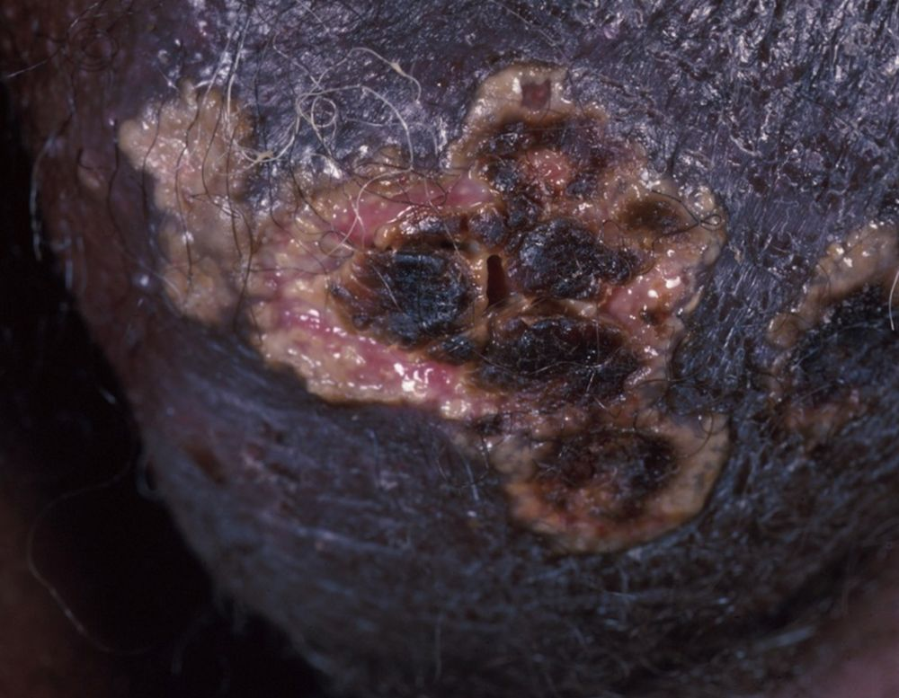
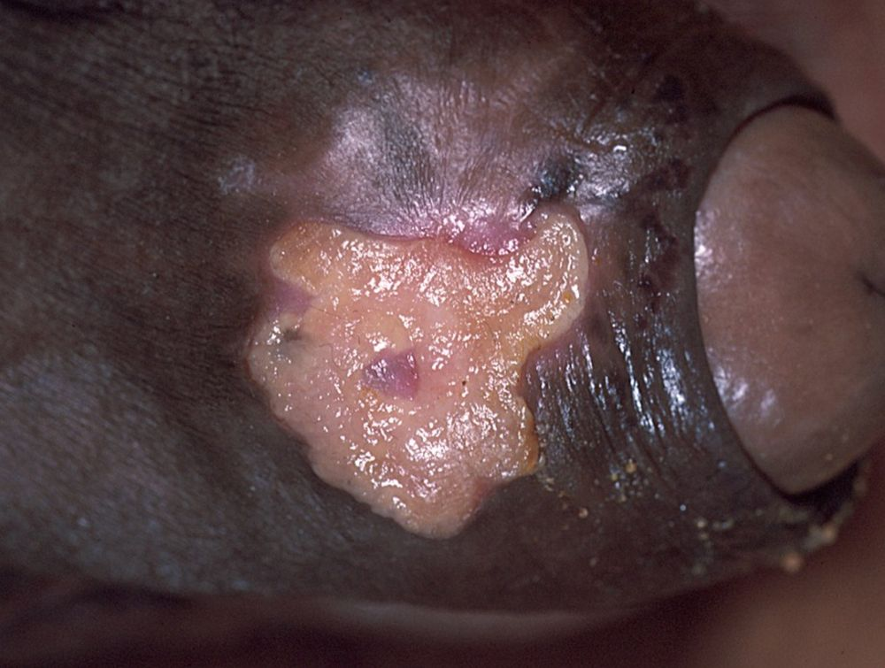
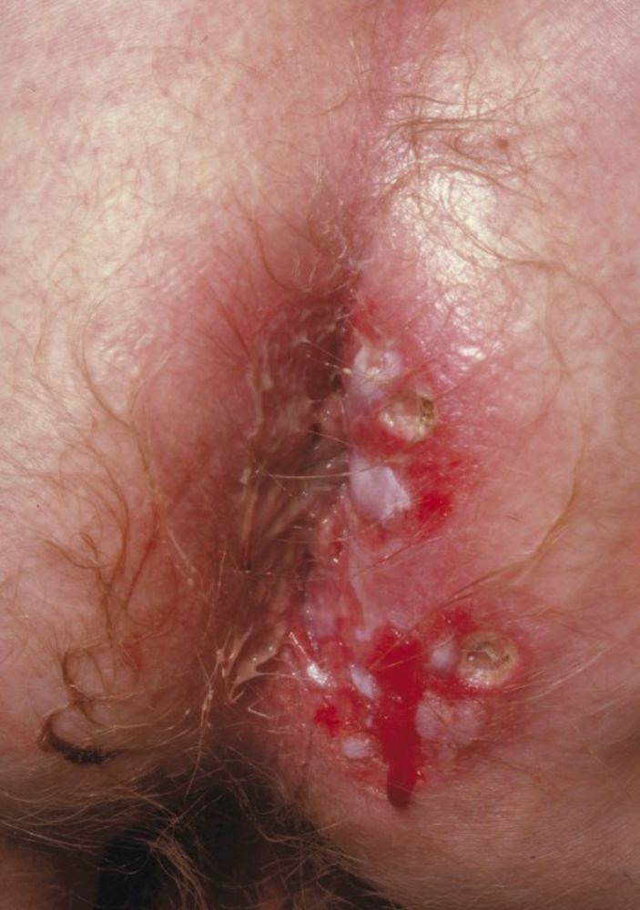

Infecção comum em todo o mundo, usualmente assintomática. O paciente é portador são, porém o vírus pode se apresentar nas secreções intermitentemente. Dependendo das condições socioeconômicas da população, de 40 a 100% dos adultos são infectados. Existem várias formas de transmissão: transplacentária (1% dos nascimentos), período perinatal e neonatal (secreção cervical no canal de parto e aleitamento materno), transfusão sangüínea, relação sexual, órgão transplantado de doador soropositivo, através da saliva e urina infectadas. O período de incubação é de 4 a 8 semanas.
Clinicamente, a infecção congênita se apresenta com hepatoesplenomegalia, icterícia e púrpura, sendo a principal causa de perda auditiva e retardo mental nesse grupo, evoluindo, quase sempre, para a fatalidade. Pode cursar com pápulas ou nódulos eritematosos ou purpúricos que permanecem por 4 a 6 semanas “BLUEBERRY MUFFIN”, traduzindo uma eritropoiese extramedular dérmica.
Em imunocompetentes, uma síndrome monunucleose símile é a forma de expressão clínica mais observada. Desenvolve-se com febre e linfocitose, exantema rubeolifomre ou maculopapuloso (até 1/3 dos casos), atingindo especialmente as pernas. O uso de ampicilina pode desencadear a erupção, tal como ocorre com a mononucleose. Menos freqüentemente observa-se: linfoadenopatia, esplenomegalia, vasculite linfocítica, livedo reticular, urticária, síndrome de Guillain-Barré, síndrome de Gianotti-Crosti e escleredema em lactentes.
Nos imunodeprimidos a evolução, geralmente, é severa e fatal. Cursa com pneumonite, hepatite, ulceração gastrointestinal, superinfecção com outros patógenos oportunistas, complicações neurológicas (encefalite, mielite, mieloradiculite), alterações cutâneas (placas ou nódulos pigmentados, vesículas, bolhas, pústulas e púrpuras, ulceração em genitália, períneo, nádega e coxas). É a principal causa de cegueira, devida à retinite, em pacientes com AIDS, podendo esses pacientes desenvolver lesões ceratósicas e ulceradas na pele e mucosa oral.
Diagnóstico
A histologia da lesão demonstra inclusões intranucleares, circundadas por halo claro, detectadas pela imunohistoquímica, chamadas OLHO DE CORUJA (“OWL EYE”) nas células endoteliais, sendo patognomônicas da infecção pelo citomegalovirus. Com o isolamento do vírus em secreções e sangue também se detecta essas inclusões nucleares. Método rápido com grande sensibilidade é o PCR. Na infecção congênita o anticorpo IgM positiva com 3 semanas de vida.
Tratamento
Geralmente não requer terapia, exceto em situações de risco de vida ou retinite, quando se emprega ganciclovir e foscarnet.
REFERÊNCIAS BIBLIOGRÁFICAS
1. Descriptivo de los casos de citomegalovirus congénitos en un hospital terciario entre 2017-2023. Elena Medina García, Arantxa Berzosa, Marta Illán Ramos, Victoria Cursach Pedrosa, Cristina Aranda Cazón, Gloria Herranz Carrillo, Enrique Criado Vega, José Tomás Ramos Amador. Rev Esp Quimioter. 2024; 37(4): 351–355.
2. In vivo magnetic resonance imaging evidence of olfactory bulbs changes in a newborn with congenital Citomegalovirus: a case report. Andrea Bianchi, Caterina Coviello, Valentina Leonardi, Michele Luzzati,. Stefano Chiti, Daniele Ermini, Vittorio Miele, Enrico Fainardi, Carlo Dani, Elisa Scola. Ital J Pediatr. 2021; 47: 227.
3. Cytomegalovirus infection in pregnancy: review of the literature. Silvia Bonalumi, Angelica Trapanese, Angelo Santamaria, Laura D’Emidio, Luisa Mobili. J Prenat Med. 2011 Jan-Mar; 5(1): 1–8.
4. La infección congénita por citomegalovirus, ¿es más prevalente en nuestro medio en neonatos expuestos al VIH? Jorge Bustamante-Amador, Isabel Mellado-Sola, María Pilar Romero-Gómez, Marta Cabrera Lafuente, María de la Calle-Fernández-Miranda, Talía Sainz-Costa, María José Mellado-Peña, Luis Escosa-García. Rev Esp Quimioter. 2022; 35(5): 482–491.
5. Papel de las infecciones víricas en pacientes inmunodeprimidos
M. Salavert, R. Granada, A. Díaz, R. Zaragoza
Med Intensiva. 2011 Mar; 35(2): 117–125.
Atlas de imagens 10




















Na Skin Prime
Como podemos ajudar
O texto sobre Citomegalovírus não cita procedimentos específicos entre os oferecidos pela clínica. A conduta é definida em consulta: nossa equipe avalia as manifestações na pele e orienta o tratamento ou o encaminhamento adequado.